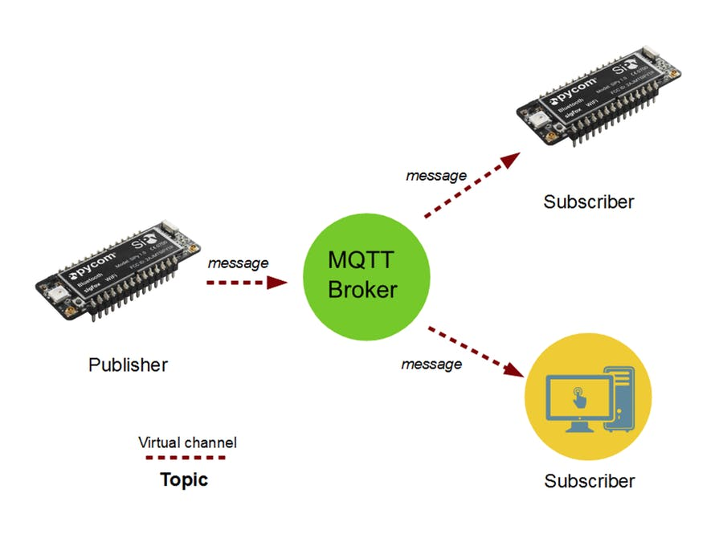
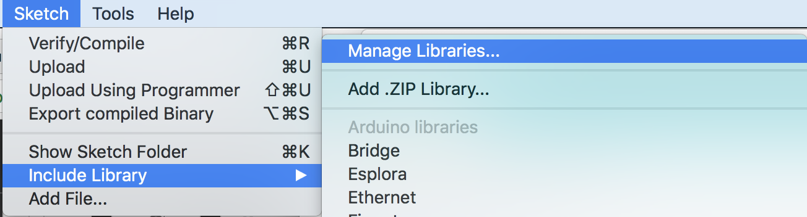
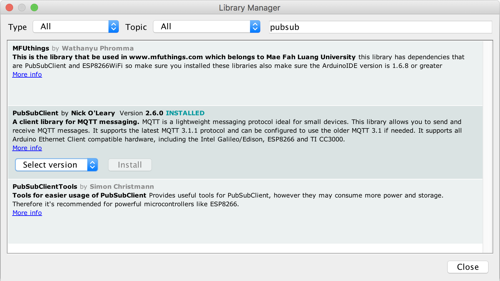
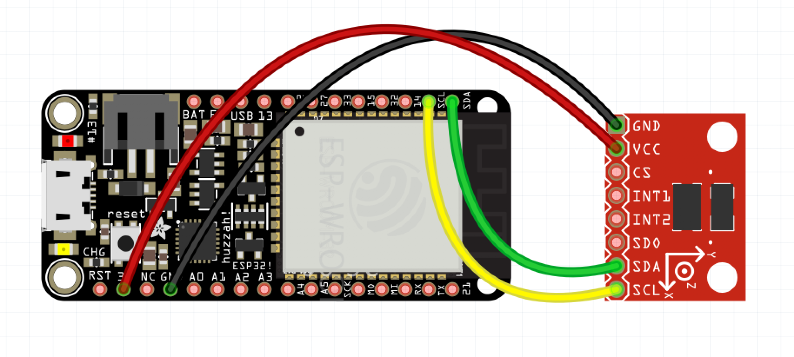

MQTT is a machine-to-machine (M2M)/"Internet of Things" connectivity protocol. It was designed as an extremely lightweight publish/subscribe messaging transport. It is useful for connections with remote locations where a small code footprint is required and/or network bandwidth is at a premium. For example, it has been used in sensors communicating to a broker via satellite link, over occasional dial-up connections with healthcare providers, and in a range of home automation and small device scenarios. It is also ideal for mobile applications because of its small size, low power usage, minimised data packets, and efficient distribution of information to one or many receivers
MQTT

Installing a broker
Open a terminal
Type 'sudo npm install mosca pino -g' (windows users no sudo)
Type 'mosca -v | pino'
Leave this terminal open, this is the 'Broker'
Installing a client
Open a second terminal
Type 'sudo npm install mqtt -g' (windows users no sudo)
This installs the client tools
mqtt sub -t 'hello' -h 'localhost'
Leave this window open
Installing a client
Open a third terminal
mqtt pub -t 'hello' -h 'localhost' -m 'Hi from me'
mqtt sub -t 'hello' -h 'localhost'
'mqtt sub' means we are subscribing
-t 'hello' indicates topic we are subscribing to
It's like the name of a chat room
We can choose any topic name, someone just has to publish to it
-h 'localhost' indicates the host which is our local computer that is running the broker
mqtt pub -t 'hello' -h 'localhost' -m 'Hi from me'
'mqtt pub' means we are publishing
-t 'hello' indicates topic we are publishing to
-h 'localhost' indicates the host which is our local computer that is running the broker
-m 'Hi from me' is the message we are sending
The ESP32 can speak MQTT
Open Arduino and go to the Library Manager

Search for PubSubClient and install

Make sure your laptop in on the BOTT network, password: iotpassword
open mqtt_esp32 from the code folder
Find you IP address, Mac Alt + Click on the wifi icon
Windows type ipconfig /all at the terminal
enter that on line 9
Upload to the ESP32, make sure to set the board and port
Check the output in the subscribe terminal
See lines 93-100 of the code
In the publish terminal type:
mqtt pub -t 'inTopic' -h 'localhost' -m '0'
This will turn the onboard LED on
mqtt pub -t 'inTopic' -h 'localhost' -m '1'
This will turn the onboard LED off
See lines 55-62 of the code
Hook Up the ADXL345 to the ESP32 3.3 -> 3v,GND -> GND,SDA->SDA,SCL->SCL

Make Usre you have the followin libraries installed